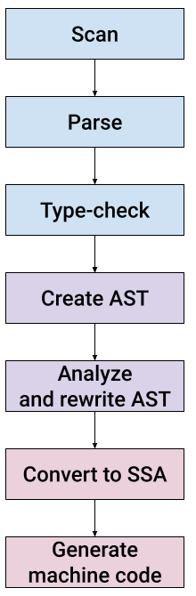

Updated (2023-05-08): the Go compiler keeps evolving and it takes time to keep up with changes. While the general gist of this post remains true and it's worth reading to understand how the compiler works on a high level, the details of the modifications are slightly different now.
To see up-do-date changes that work with the latest Go (in-development version 1.21 at the time of this update), check out the adduntil-121-part1 branch from my GitHub fork of the Go repository. Diff it vs. the master branch to see the full list of changes.
the compilation flow has changed somewhat since this post was originally written. It has now been updated to Go 1.19.
This is the first post in a two-part series that takes a tutorial-based approach to exploring the Go compiler. The compiler is large and would require a small book to describe properly, so the idea of these posts is to provide a quick depth-first dive instead. I plan to write more descriptive posts on specific areas of the compiler in the future.
We're going to change the Go compiler to add a new (toy) language feature, and build a modified compiler to play with.
The task - adding a new statement
Many languages have a while statement, which in Go is expressed with for:
for <some-condition> {
<loop body>
}
Adding a while statement to Go would therefore be trivial - just treat it the same as for (perhaps limiting the options of what the statement could do). So I chose a slightly more challenging task, adding until. until is the same as while except that the condition is negated. For example, this code:
i := 4
until i == 0 {
i--
fmt.Println("Hello, until!")
}
Is equivalent to:
i := 4
for i != 0 {
i--
fmt.Println("Hello, until!")
}
In fact, we could even use an initializer in the loop declaration as follows:
until i := 4; i == 0 {
i--
fmt.Println("Hello, until!")
}
Our implementation will support this.
A mandatory disclaimer - this is just a toy exercise. I don't think adding until to Go is a good idea at all; Go's minimalism is an advantage.
High-level structure of the Go compiler
The default Go compiler (gc) has a fairly traditional structure that should be immediately familiar if you worked on other compilers before:
Relative to the Go repository root, the compiler implementation lives in src/cmd/compile/internal; all the code paths mentioned later in the post are going to be relative to this directory. It's all written in Go and the code is fairly readable. Throughout this post we're going to examine these stages one by one, as we add the required code to support an until statement.
Check out the README file in src/cmd/compile for a nice step-by-step description of the compilation steps. That file is a good companion to this blog post.
Scan
The scanner (also known as lexer) breaks up source code text into discrete entities for the compiler. For example, the word for becomes the constant _For; the characters ... become _DotDotDot, while . on its own becomes _Dot, and so on.
The scanner is implemented in the syntax package. All we need from it here is to understand a new keyword - until. The file syntax/tokens.go has a list of all tokens understood by the compiler, and we'll add a new one:
_Fallthrough // fallthrough
_For // for
_Until // until
_Func // func
The comment on the right-hand side of the token constant is important, as it's used to identify the token in text. This is done by means of code generation from syntax/tokens.go, which has this line above the list of tokens:
//go:generate stringer -type token -linecomment
go generate has to be run manually and the output file (syntax/token_string.go) is checked into the Go source repository. To regenerate it I ran the following command from the syntax directory:
GOROOT=<src checkout> go generate tokens.go
The GOROOT setting is essential as of Go 1.12, and has to point to the root of the source checkout where we're modifying the compiler.
Having run the code generator and verified that syntax/token_string.go now has the new token, I tried rebuilding the compiler and ran into a panic:
panic: imperfect hash
It comes from this code in syntax/scanner.go:
// hash is a perfect hash function for keywords.
// It assumes that s has at least length 2.
func hash(s []byte) uint {
return (uint(s[0])<<4 ^ uint(s[1]) + uint(len(s))) & uint(len(keywordMap)-1)
}
var keywordMap [1 << 6]token // size must be power of two
func init() {
// populate keywordMap
for tok := _Break; tok <= _Var; tok++ {
h := hash([]byte(tok.String()))
if keywordMap[h] != 0 {
panic("imperfect hash")
}
keywordMap[h] = tok
}
}
The compiler tries to build a "perfect" hash table to perform keyword string to token lookups. By "perfect" it means it wants no collisions, just a linear array where every keyword maps to a single index. The hash function is rather ad-hoc (it only looks at the contents of the first characters of the string token, for example) and it's not easy to debug why a new token creates collisions. To work around it, I increased the lookup table size by changing it to [1 << 7]token, thus changing the size of the lookup array from 64 to 128. This gives the hash function much more space to distribute its keys, and the collision went away.
Parse
Go has a fairly standard recursive-descent parser, which converts a stream of tokens produced by the scanner into a concrete syntax tree. We'll start by adding a new node type for until in syntax/nodes.go:
UntilStmt struct {
Init SimpleStmt
Cond Expr
Body *BlockStmt
stmt
}
I borrowed the overall structure from ForStmt, which is used for for loops. Similarly to for, our until statement has several optional sub-statements:
until <init>; <cond> {
<body>
}
Both <init> and <cond> are optional, though it's not common to omit <cond>. The UntilStmt.stmt embedded field is used for all syntax tree statements and contains position information.
The parsing itself is done in syntax/parser.go. The parser.stmtOrNil method parses a statement in the current position. It looks at the current token and makes a decision of which statement to parse. Here's an excerpt with the code we're adding:
switch p.tok {
case _Lbrace:
return p.blockStmt("")
// ...
case _For:
return p.forStmt()
case _Until:
return p.untilStmt()
And this is untilStmt:
func (p *parser) untilStmt() Stmt {
if trace {
defer p.trace("untilStmt")()
}
s := new(UntilStmt)
s.pos = p.pos()
s.Init, s.Cond, _ = p.header(_Until)
s.Body = p.blockStmt("until clause")
return s
}
We reuse the existing parser.header method which parses a header for if and for statements. In its most general form, it supports three parts (separated by semicolons). In for statements the third part can be used for the "post" statement, but we're not going to support this for until so we're only interested in the first two. Note that header accepts the source token to be able to differentiate between the kinds of statements it's serving; for example it would reject a "post" statement for if. We should explicitly reject it for until too, though I haven't bothered to implement this right now.
These are all the changes we need for the parser. Since until is so similar structurally to existing statements, we could reuse much of the functionality.
If we instrument the compiler to dump out the syntax tree (using syntax.Fdump) after parsing and run it on:
i = 4
until i == 0 {
i--
fmt.Println("Hello, until!")
}
We'll get this fragment for the until statement:
84 . . . . . 3: *syntax.UntilStmt {
85 . . . . . . Init: nil
86 . . . . . . Cond: *syntax.Operation {
87 . . . . . . . Op: ==
88 . . . . . . . X: i @ ./useuntil.go:13:8
89 . . . . . . . Y: *syntax.BasicLit {
90 . . . . . . . . Value: "0"
91 . . . . . . . . Kind: 0
92 . . . . . . . }
93 . . . . . . }
94 . . . . . . Body: *syntax.BlockStmt {
95 . . . . . . . List: []syntax.Stmt (2 entries) {
96 . . . . . . . . 0: *syntax.AssignStmt {
97 . . . . . . . . . Op: -
98 . . . . . . . . . Lhs: i @ ./useuntil.go:14:3
99 . . . . . . . . . Rhs: *(Node @ 52)
100 . . . . . . . . }
101 . . . . . . . . 1: *syntax.ExprStmt {
102 . . . . . . . . . X: *syntax.CallExpr {
103 . . . . . . . . . . Fun: *syntax.SelectorExpr {
104 . . . . . . . . . . . X: fmt @ ./useuntil.go:15:3
105 . . . . . . . . . . . Sel: Println @ ./useuntil.go:15:7
106 . . . . . . . . . . }
107 . . . . . . . . . . ArgList: []syntax.Expr (1 entries) {
108 . . . . . . . . . . . 0: *syntax.BasicLit {
109 . . . . . . . . . . . . Value: "\"Hello, until!\""
110 . . . . . . . . . . . . Kind: 4
111 . . . . . . . . . . . }
112 . . . . . . . . . . }
113 . . . . . . . . . . HasDots: false
114 . . . . . . . . . }
115 . . . . . . . . }
116 . . . . . . . }
117 . . . . . . . Rbrace: syntax.Pos {}
118 . . . . . . }
119 . . . . . }
Type-check
The next step in compilation is type-checking, which is done on the syntax tree and uses the types2 package [1]. In addition to detecting type errors, type-checking in Go also includes type inference, which allows us to write statements like:
res, err := func(args)
Without declaring the types of res and err explicitly. The Go type-checker does a few more tasks, like linking identifiers to their declarations and computing compile-time constants. The code is in types2/. Once again, following the lead of the for statement, we'll add this clause to the switch in the stmt method of Checker (in cmd/internal/types2/stmt.go):
case *syntax.UntilStmt:
inner |= breakOk | continueOk
check.openScope(s, "until")
defer check.closeScope()
check.simpleStmt(s.Init)
if s.Cond != nil {
var x operand
check.expr(nil, &x, s.Cond)
if x.mode != invalid && !allBoolean(x.typ) {
check.error(s.Cond, InvalidCond, "non-boolean condition in for statement")
}
}
check.stmt(inner, s.Body)
Create AST
Now that we have a type-checked syntax tree, the compiler builds an abstract syntax tree. I've written about Abstract vs. Concrete syntax trees in the past - it's worth checking out if you're not familiar with the differences. In case of Go, however, this may get changed in the future. The Go compiler was originally written in C and later auto-translated to Go; some parts of it are vestigial from the olden C days, and some parts are newer. Future refactorings may leave only one kind of syntax tree, but right now (Go 1.21) this is the process we have to follow.
The AST code lives in the ir package, and the node types are defined in ir/node.go and ir/stmt.go.
We'll start by adding a new constant to identify an until node in ir/node.go:
// statements
// ...
OFALL // fallthrough
OFOR // for Init; Cond; Post { Body }
OUNTIL
We'll run go generate again, this time on ir/node.go, to generate a string representation for the new node type:
// from the ir directory
GOROOT=<src checkout> go generate node.go
This should update the gc/op_string.go file to include OUNTIL [2]. Another tool we need to run is mknode.go, from the same directory. This tool generates additional code for the new node:
// from the ir directory
GOROOT=<src checkout> <checkout/bin>go run -mod=mod mknode.go
Now let's define the AST node types for our new statement (in ir/stmt.go):
type UntilStmt struct {
miniStmt
Label *types.Sym
Cond Node
Body Nodes
HasBreak bool
}
func NewUntilStmt(pos src.XPos, init Node, cond Node, body []Node) *UntilStmt {
n := &UntilStmt{Cond: cond}
n.pos = pos
n.op = OUNTIL
if init != nil {
n.init = []Node{init}
}
n.Body = body
return n
}
We'll also need to update ir/fmt.go to be able to format / print out our new node for debugging:
// ... add this in OpNamse slice
OFOR: "for",
OUNTIL: "until",
As well as this switch clause in the stmtFmt method:
case OUNTIL:
n := n.(*UntilStmt)
opname := "for"
if !exportFormat {
fmt.Fprintf(s, "%s loop", opname)
break
}
fmt.Fprint(s, opname)
if simpleinit {
fmt.Fprintf(s, " %v;", n.Init()[0])
}
if n.Cond != nil {
fmt.Fprintf(s, " %v", n.Cond)
}
if simpleinit {
fmt.Fprint(s, ";")
}
fmt.Fprintf(s, " { %v }", n.Body)
Finally, the noder component is responsible for actually converting syntax trees to ASTs; we'll add this code in noder/stmt.go:
// in irgen's stmt method...
case *syntax.ForStmt:
return g.forStmt(stmt)
case *syntax.UntilStmt:
return g.untilStmt(stmt)
And the new method:
func (g *irgen) untilStmt(stmt *syntax.UntilStmt) ir.Node {
return ir.NewUntilStmt(g.pos(stmt), g.stmt(stmt.Init), g.expr(stmt.Cond), g.blockStmt(stmt.Body))
}
Analyze and rewrite AST
After type-checking, the compiler goes through several stages of AST analysis and rewrite. The exact sequence is laid out in the gc.Main function in gc/main.go. In compiler nomenclature such stages are usually called passes.
Many passes don't require modifications to support until because they act generically on all statement kinds (here the generic structure of gc.Node comes useful). Some still do, however. For example escape analysis, which tries to find which variables "escape" their function scope and thus have to be allocated on the heap rather than on the stack.
Escape analysis works per statement type, so we have to add this switch clause in escape.stmt:
case ir.OUNTIL:
n := n.(*ir.UntilStmt)
e.loopDepth++
e.discard(n.Cond)
e.block(n.Body)
e.loopDepth--
Now we're getting to the last stage of the compiler's middle end: rewriting the AST. This step is called "walk" in Go compiler nomenclature. Its main goal is to decompose complex operations into simpler ones, so that the backend will have to deal with fewer operation types.
We'll have to update walk/order.go to be aware of the new AST node we've added. It doesn't do much except serve as a pass-through for the transformation:
case ir.OUNTIL:
n := n.(*ir.UntilStmt)
t := o.markTemp()
n.Cond = o.exprInPlace(n.Cond)
n.Body.Prepend(o.cleanTempNoPop(t)...)
orderBlock(&n.Body, o.free)
o.out = append(o.out, n)
o.cleanTemp(t)
The rest of the walk code collects a bunch of AST transformations that helps lower the AST to SSA later on. For example, it rewrites range clauses in for loops to simpler forms of for loops with an explicit loop variable [3]. It also rewrites map accesses to runtime calls, and much more.
This is where we'll implement our new until statement by desugaring it into a for loop with an inverted condition.
We'll start by handling the new op in the switch in walkStmt (this code is in walk/stmt.go):
case ir.OUNTIL:
n := n.(*ir.UntilStmt)
return walkUntil(n)
And adding walkUntil as follows:
func walkUntil(n *ir.UntilStmt) ir.Node {
if n.Cond != nil {
init := ir.TakeInit(n.Cond)
walkStmtList(init)
n.Cond = ir.NewUnaryExpr(base.Pos, ir.ONOT, walkExpr(n.Cond, &init))
n.Cond = ir.InitExpr(init, n.Cond)
}
walkStmtList(n.Body)
return ir.NewForStmt(n.Pos(), nil, n.Cond, nil, n.Body)
}
This is it! This rewrites the UntilStmt node to a ForStmt node, adding a unary boolean negation (essentially the ! operator) on the condition, as discussed at the very beginning of the post.
Trying it out
We can now try out our modified compiler and run a sample program that uses an until statement:
$ cat useuntil.go
package main
import "fmt"
func main() {
i := 4
until i == 0 {
i--
fmt.Println("Hello, until!")
}
}
$ <src checkout>/bin/go run useuntil.go
Hello, until!
Hello, until!
Hello, until!
Hello, until!
It works!
Reminder: <src checkout> is the directory where we checked out Go, changed it and compiled it (see Appendix for more details).
Concluding part 1
This is it for part 1. We've successfully implemented a new statement in the Go compiler. We didn't cover all the parts of the compiler because we could take a shortcut by rewriting the AST of until nodes to use for nodes instead. This is a perfectly valid compilation strategy, and the Go compiler already has many similar transformations to canonicalize the AST (reducing many forms to fewer forms so the last stages of compilation have less work to do). That said, we're still interested in exploring the last two compilation stages - Convert to SSA and Generate machine code. This will be covered in part 2.
Appendix - building the Go toolchain
Please start by going over the Go contribution guide. Here are a few quick notes on reproducing the modified Go compiler as shown in this post.
There are two paths to proceed:
- Clone the official Go repository and apply the modifications described in this post.
- (recommended) Clone my fork of the Go repository and check out the adduntil-121-part1 branch, where all these changes are already applied along with some debugging helpers.
The cloned directory is where <src checkout> points throughout the post.
To compile the toolchain, enter the src/ directory and run ./make.bash. We could also run ./all.bash to run many tests after building it. Running make.bash invokes the full 3-step bootstrap process of building Go, but it only takes about a minute on my aging machine.
Once built, the toolchain is installed in bin alongside src. We can then do quicker rebuilds of the compiler itself by running bin/go install cmd/compile.
| [1] | The types2 package is a port (onto the compiler's internal data structures) of the type checking algorithms in go/types. It's kept in sync with go/types. |
| [2] | If you peruse this and related parts of the compiler's code, you'll notice there's another opcode called OFORUNTIL. This node implements a for-like loop where the condition is checked at the end of an iteration; it's used internally by compiler to transform some loops and is not accessible to Go programmers. We'll ignore it in this post. |
| [3] | Go has some special "magic" range clauses like a range over a string which splits its up into runes. This is where such transformations are implemented. |